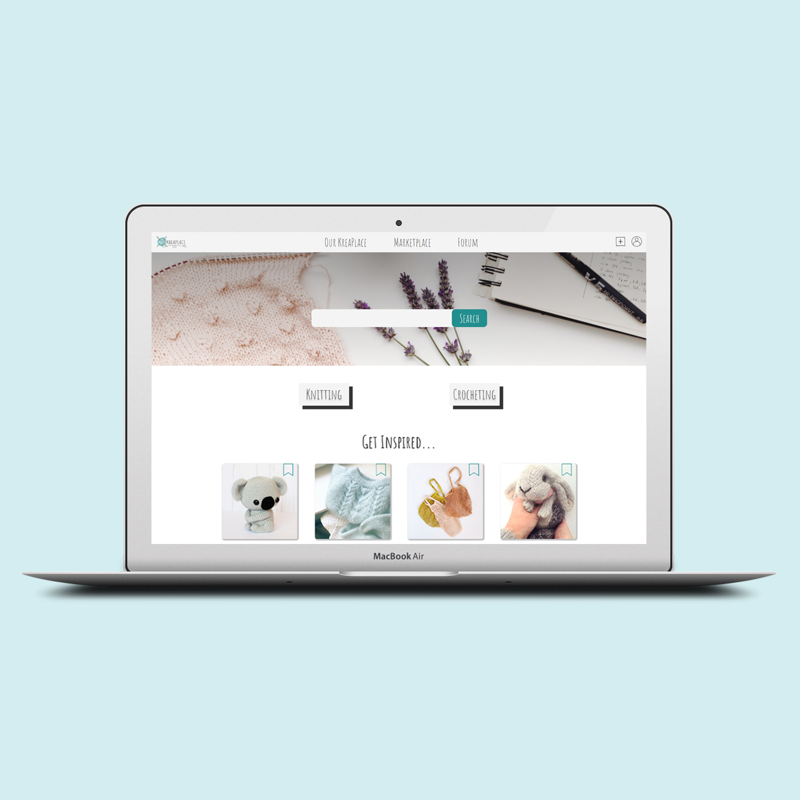
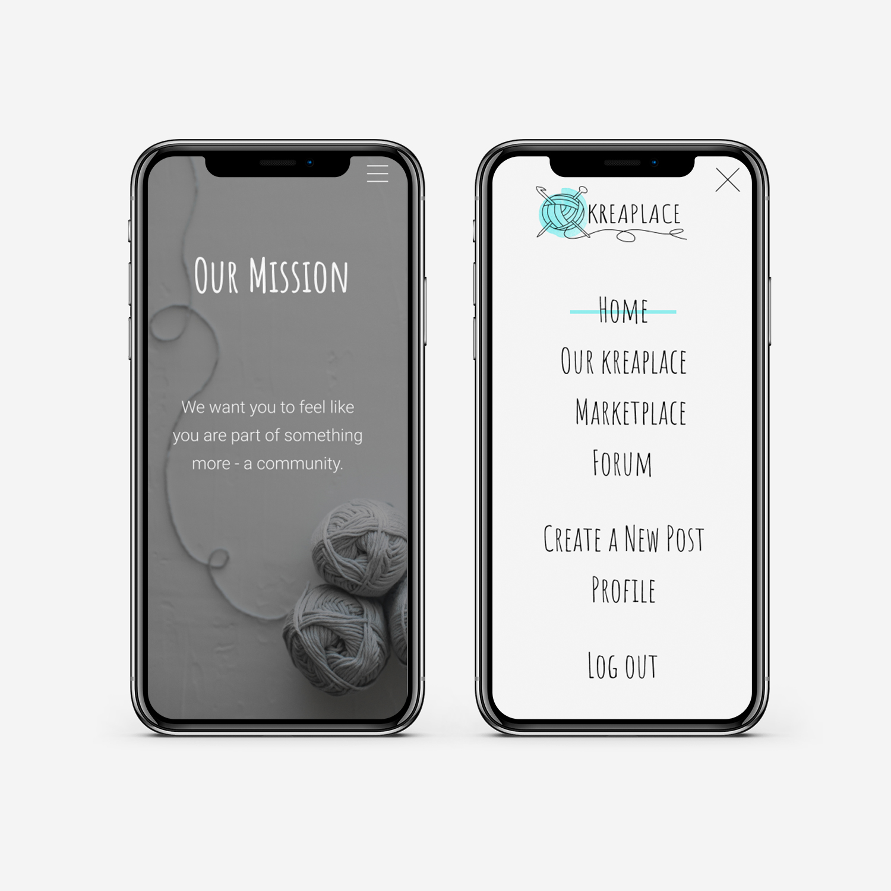

Concept
KreaPlace is an online community that gathers anything related to knitting and crocheting into one social media platform. The opportunities on KreaPlace are endless, whether you are seeking inspiration, looking to purchase a pattern or just want to communicate with people who share their same interests as you.
 Project Description
Before teaming up with KreaPlace alongside my group for our 2nd semester exam
project, they were simply a start up business with no website and only a small online presence. The
goal
of the project was to help develop and design an online solution as well as create a social media
strategy for them.
The final solution is simply created as a blue print for our client and it combines an
online
community and marketplace with a visual discovery tool. The founder of KreaPlace was very satisfied
with
our solution and elements of our design can be found on their present platform.